[...The project proposes a new mausoleum and crematorium for Mount Hope Cemetery in Raleigh, North Carolina. Designed as a total precast concrete building, it integrates structure, enclosure, and ceremonial spaces while exploring long-span UHPC systems and daylighting strategies...]
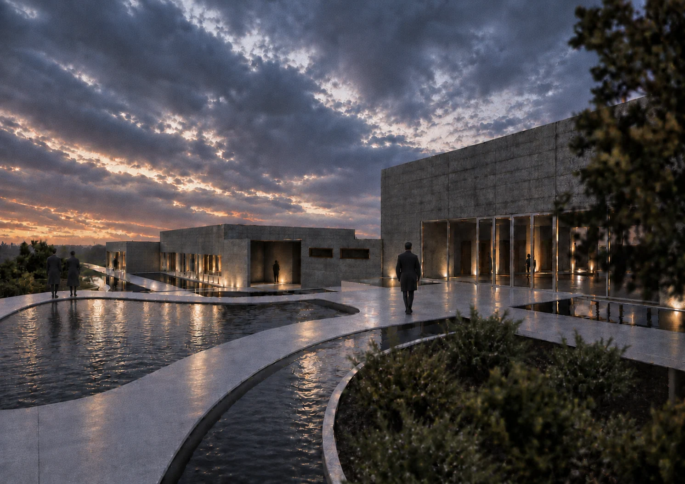
Introspection explores how architecture can create spaces for reflection, inner awareness, and acceptance. Rather than treating mourning only as a functional program, the design considers how spatial experience can support a more personal and contemplative relationship with loss.
The intention is to create a journey in which visitors can momentarily disconnect from their surroundings, slow down, and confront loss through spaces shaped by transition, reflection, and connection to the cemetery.
Site Context
The site is defined by two contrasting conditions. To the west, a major boulevard introduces noise, movement, and the intensity of everyday life; to the east, the cemetery offers a quieter and more reflective landscape.
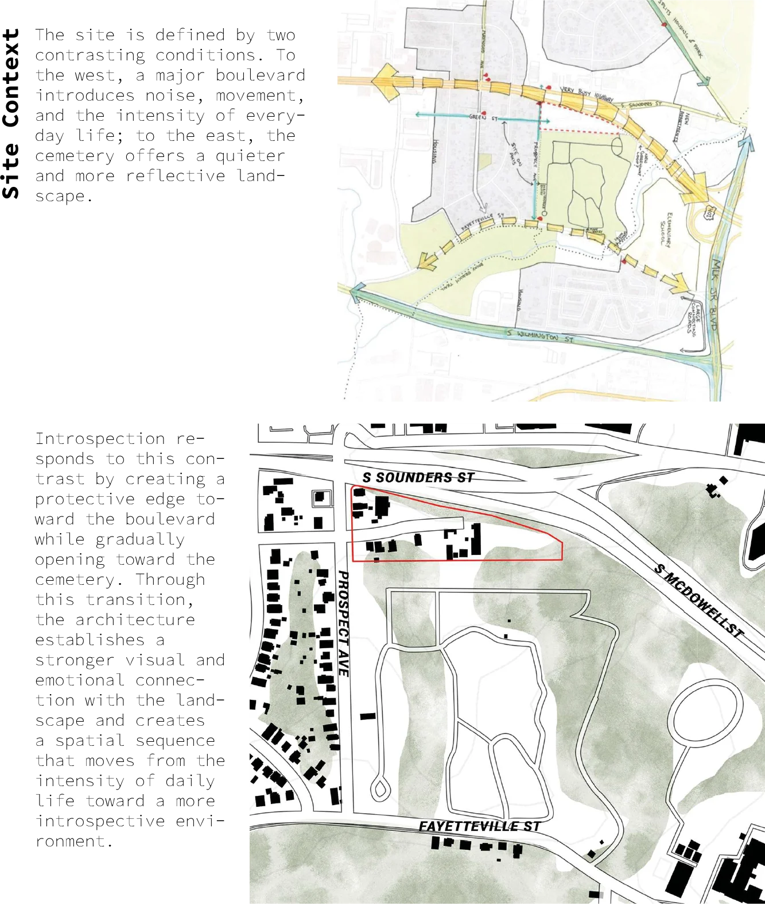
Introspection responds to this contrast by creating a protective edge toward the boulevard while gradually opening toward the cemetery. Through this transition, the architecture establishes a stronger visual and emotional connection with the landscape and creates a spatial sequence that moves from the intensity of daily life toward a more introspective environment.
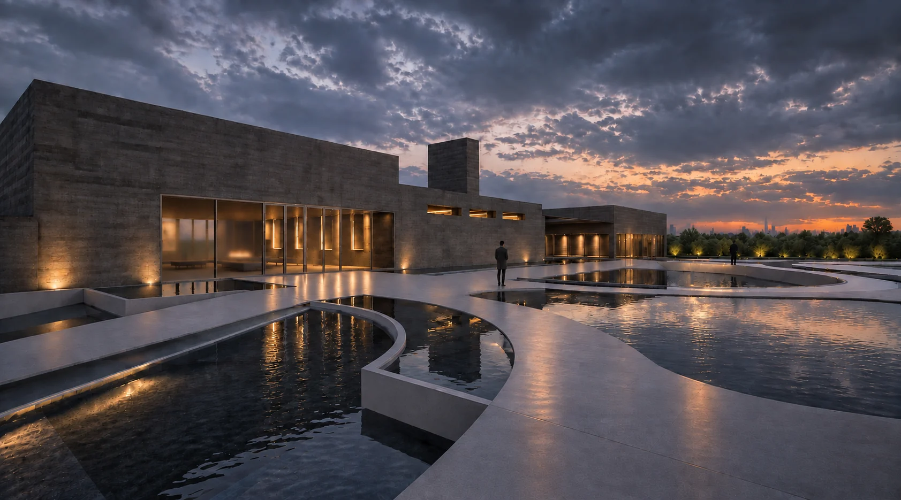
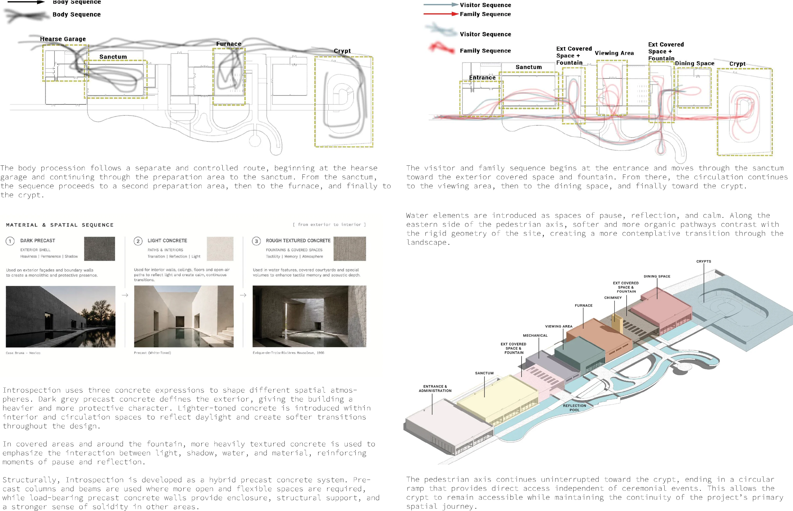
The body procession follows a separate and controlled route, beginning at the hearse garage and continuing through the preparation area to the sanctum. From the sanctum, the sequence proceeds to a second preparation area, then to the furnace, and finally to the crypt.
The visitor and family sequence begins at the entrance and moves through the sanctum toward the exterior covered space and fountain. From there, the circulation continues to the viewing area, then to the dining space, and finally toward the crypt.
Water elements are introduced as spaces of pause, reflection, and calm. Along the eastern side of the pedestrian axis, softer and more organic pathways contrast with the rigid geometry of the site, creating a more contemplative transition through the landscape.
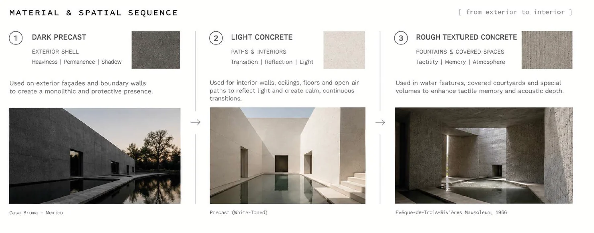
Introspection uses three concrete expressions to shape different spatial atmospheres. Dark grey precast concrete defines the exterior, giving the building a heavier and more protective character. Lighter-toned concrete is introduced within interior and circulation spaces to reflect daylight and create softer transitions throughout the design.
In covered areas and around the fountain, more heavily textured concrete is used to emphasize the interaction between light, shadow, water, and material, reinforcing moments of pause and reflection.
Structurally, Introspection is developed as a hybrid precast concrete system. Precast columns and beams are used where more open and flexible spaces are required, while load-bearing precast concrete walls provide enclosure, structural support, and a stronger sense of solidity in other areas.
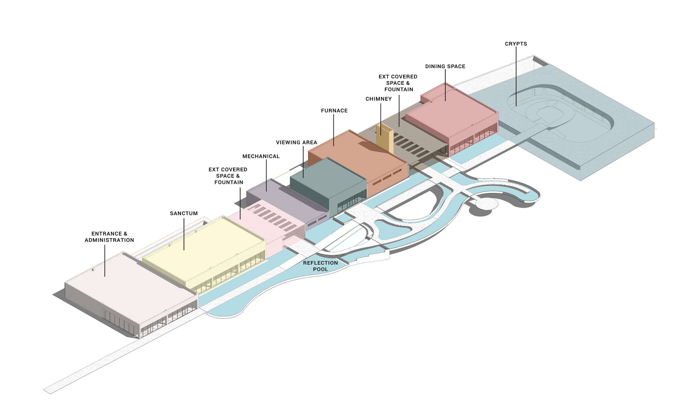
The pedestrian axis continues uninterrupted toward the crypt, ending in a circular ramp that provides direct access independent of ceremonial events. This allows the crypt to remain accessible while maintaining the continuity of the project’s primary spatial journey.
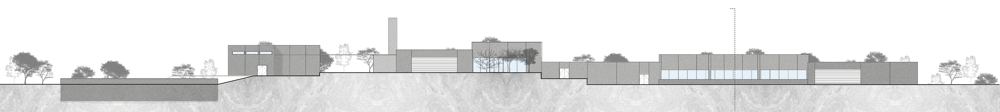
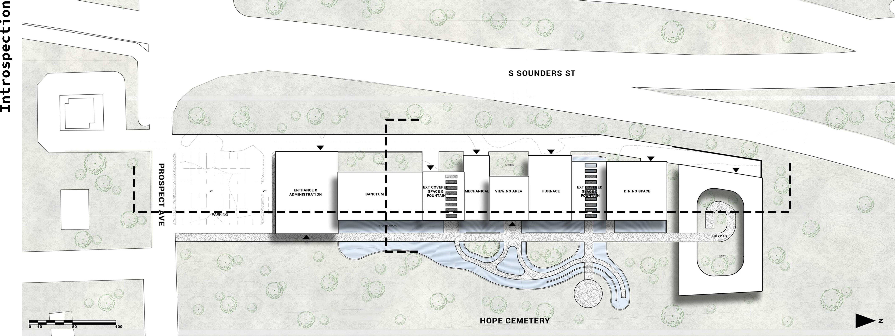
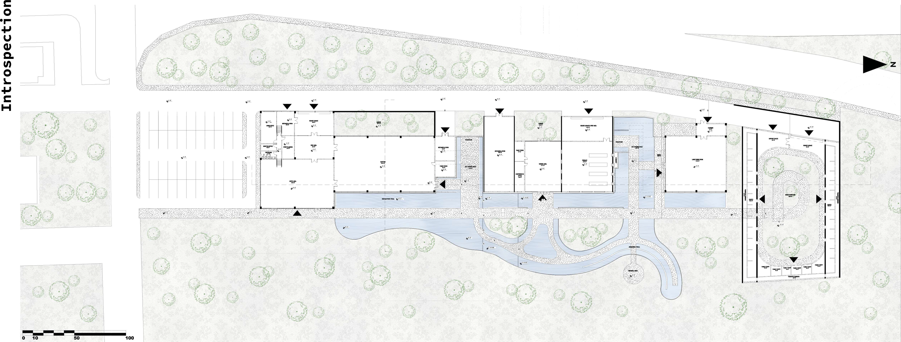
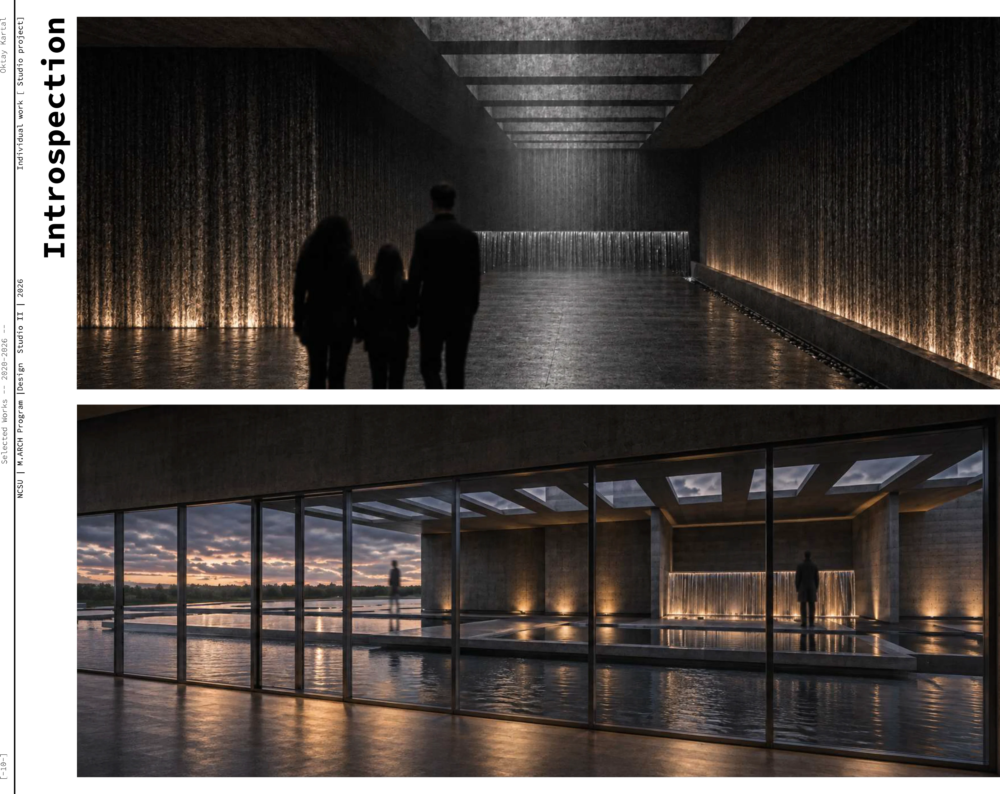
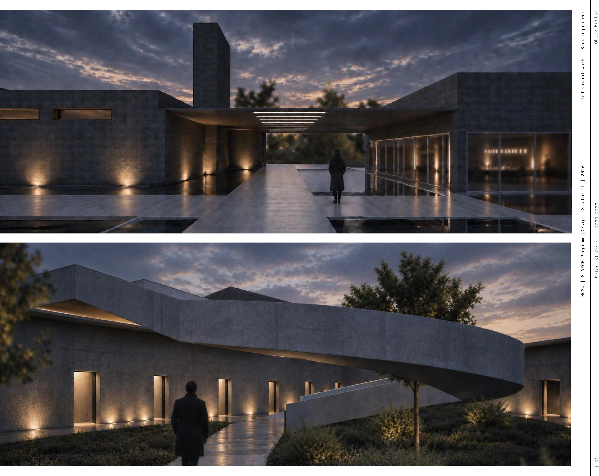